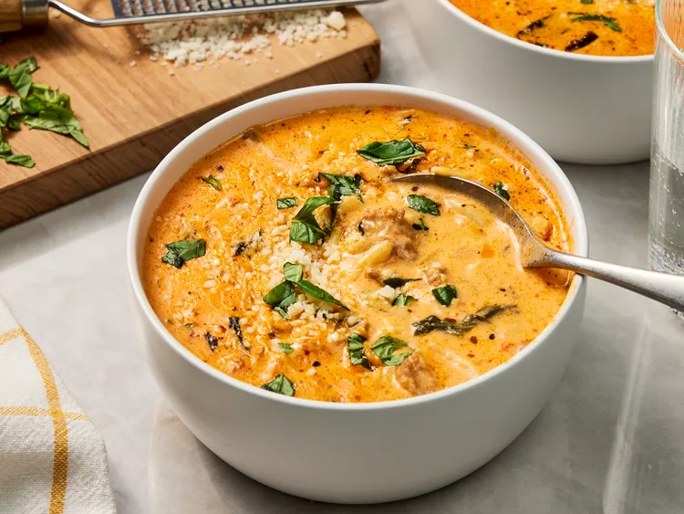

Marry me sausage orzo soup

Delicious and filling. People love how creamy it is.
ingredients
- 3/4 cup drained julienne-cut sun-dried tomatoes packed in oil with herbs, coarsely chopped
- 1 tablespoon oil from sun-dried tomato jar
- 1 pound mild italian pork sausage
- 1 large yellow onion, finely chopped
- 2 large garlic cloves, minced
- 3 tablespoons tomato paste
- 8 cups chicken broth
- 1 cup heavy whipping cream
- 1 tablespoon chopped fresh basil, plus more for garnish
- 2 teaspoons kosher salt
- 1 teaspoon dried Italian seasoning
- 1/2 teaspoon paprika
- 8 ounces uncooked orzo
- 3 cups packed fresh baby spinach, coarsely chopped
- 1 (8-ounce) package cream cheese, cubed, at room temperature
- 1/3 cup freshly grated Parmesan cheese
Directions
- Gather all ingredients.
- Heat oil from sun-dried tomatoes in a large pot over medium-high until shimmering.
Add sausage; cook, stirring occasionally, until sausage crumbles and is almost fully
cooked through, about 5 minutes. Add onions and garlic; cook, stirring occasionally,
until softened, about 5 minutes.
- Add tomato paste and sun-dried tomatoes;
cook, stirring constantly, until tomato paste is slightly
deeper red in color and fragrant, about 2 minutes.
- Stir in broth, cream, basil, salt, Italian seasoning,
and paprika; bring to a boil over medium, stirring occasionally,
until bubbling and frothy on top, about 12 minutes.
Add pasta and reduce heat to medium-low; cook, uncovered, stirring occasionally,
until orzo is al dente, about 8 minutes.
- Reduce heat to low, and add spinach, cream cheese, and Parmesan;
cook, stirring often, until cream cheese and spinach is wilted, about 5 minutes.
- Garnish with additional Parmesan cheese and basil before serving.
Home
Back to lunch